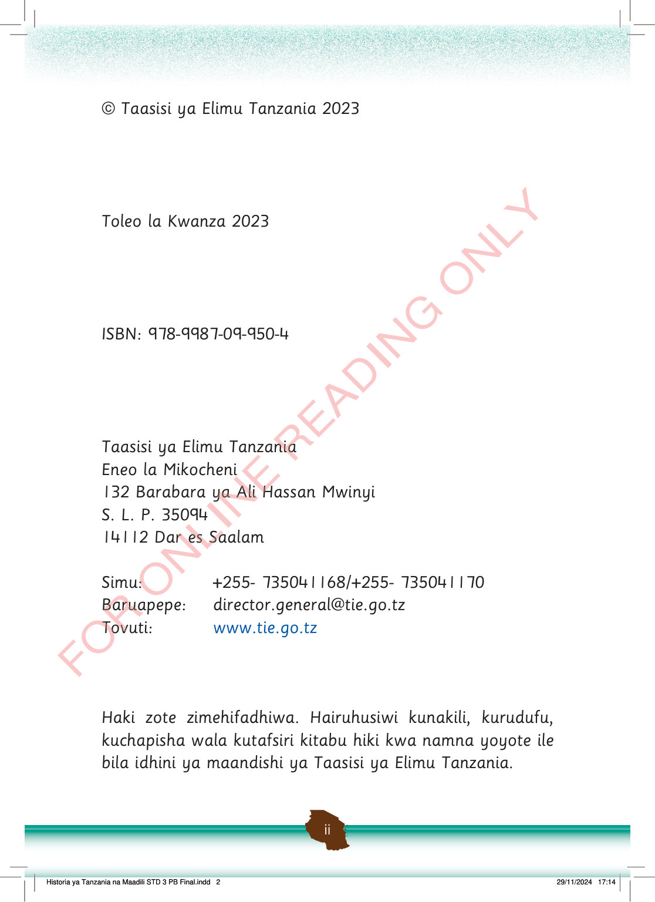

FOR ONLINE READING ONLY
© Taasisi ya Elimu Tanzania 2023
Toleo la Kwanza 2023
ISBN: 978-9987-09-950-4
Taasisi ya Elimu Tanzania
Eneo la Mikocheni
132 Barabara ya Ali Hassan Mwinyi
S. L. P. 35094
14112 Dar es Salaam
Simu: +255- 735041168/+255- 735041170
Baruapepe: director.general@tie.go.tz
Tovuti: www.tie.go.tz
Haki zote zimehifadhiwa.
Hairuhusiwi kunakili, kurudufu, kuchapisha wala kutafsiri kitabu hiki kwa namna yoyote ile bila idhini ya maandishi ya Taasisi ya Elimu Tanzania.
Historia ya Tanzania na Maadili STD 3 PB Final.indd 2
29/11/2024 17:14